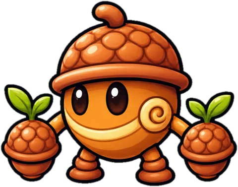

 Grass
GrassTap a stage to read its story.
A walking acorn no taller than a boot, Seedling wears a glossy ribbed cap pulled low over two big eyes, and swings a pair of little pinecone fists it loves to knock together when excited. Two green leaves sprout from its cap - they perk up at a brave new sound and droop when it grows sleepy. It was the first friend the guardians ever made in Verdant Valley, and it stayed among the roots when Akilla fell to Abalont's shadow.
Field note: A tap-tap-tap through the undergrowth is usually a Seedling drumming its pinecone fists, calling for a friend.
Verdant Valley. Seedling and its family are found in the Verdant Valley. See everyone who lives there.
Share a Bond Food that matches its types to become friends. Seedling loves:
A Bond Food is not a trick. It joins your spirit with the Kimuro's spirit, and only when it chooses you.
Print the Kimuro adventure packs: mazes, cards, a board game and Bond Mark medals.
See the printable packs